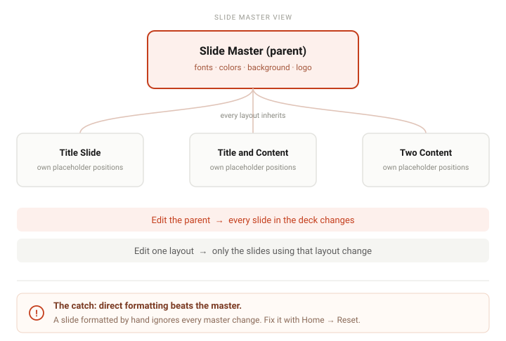

To use Slide Master in PowerPoint: go to View → Slide Master. The large thumbnail at the top is the parent master — edit it to change fonts, colors, backgrounds and logos on every slide at once. The smaller thumbnails below are individual layouts that inherit from it. When you are done, click Close Master View.
The Slide Master is the single most useful thing in PowerPoint and the one feature almost nobody learns. It is what lets you change the font on a 60-slide deck in one click instead of sixty. It is also, once you understand it, the thing that explains why some of your slides mysteriously ignore formatting changes — so it is worth learning even if you never build a template.
Step by step
-
Open Slide Master
Go to the View tab and click Slide Master. The view changes completely: the thumbnail pane on the left now shows one large slide at the top with a column of smaller ones beneath it, and the ribbon switches to a Slide Master tab.
Using the web app? Slide Master editing is desktop-only. Presentations built with a custom master will display fine in the browser, but you cannot open or edit the master there.
-
Understand the two levels — this is the whole trick
Everything about Slide Master makes sense once you see that it is a two-level system:
The parent master — the single large thumbnail at the top. It is not a slide you will ever present. It is the base that every layout inherits from. Change a font here and every slide in the deck follows.
The layouts — the smaller thumbnails below it. Each one defines a specific arrangement: Title Slide, Title and Content, Two Content, and so on. A layout inherits everything from the parent, then adds its own placeholder positions on top.So: edit the parent to change everything; edit a layout to change one kind of slide. That is the entire mental model, and it is why the master is so much faster than fixing slides one by one.

One parent, many children. The parent master feeds every layout; each layout then adds its own placeholder positions. The warning at the bottom is the part that catches everyone out. -
Edit the parent master first
Select the top thumbnail and make your broad changes there. On the Slide Master tab you can set the theme fonts (Fonts), the theme colors (Colors), and the background. Right-click the background to reach Format Background for a solid fill, gradient, or picture.
Doing the broad work here rather than on individual slides is the difference between a ten-second change and an afternoon of clicking.
-
Adjust individual layouts
Now click a layout thumbnail — say Title and Content — and adjust just that one. Reposition the title placeholder, resize the content area, move the body text up or down.
The placeholders on a layout are the same boxes you see as "Click to add title" in Normal view. Moving them here moves them on every slide that uses this layout, which is how you fix an entire deck's text sitting too low on the slide.
Watch the dashed outlines while you drag. The master shows placeholder boundaries that are invisible in Normal view, so you can align things precisely instead of guessing.
-
Add branding that should appear everywhere
This is the most common reason people open Slide Master at all. To put a logo on every slide: select the parent master, then Insert → Pictures and place your logo where you want it. Because every layout inherits from the parent, it now appears everywhere.
The same applies to footer text and slide numbers, but not through Insert Placeholder — that one makes content placeholders, not page furniture. Footer, date and slide-number placeholders already exist on every layout and inherit from the master, which is why editing them here updates every slide at once. They are simply switched off until you turn them on with Insert → Header & Footer and Apply to All.
Logo showing on some slides but not others? You inserted it on an individual layout instead of the parent master. Cut it from the layout and paste it on the top thumbnail.
-
Delete the layouts you will never use
A stock PowerPoint file ships with around a dozen layouts, most of which you will never touch. Right-click a layout thumbnail and choose Delete Layout.
This is not just tidiness — it is the difference between a usable New Slide gallery and one where you scroll past nine options to find the two you actually use. Keep the ones your deck needs and delete the rest.
-
Close Master View and check your slides
Click Close Master View — the rightmost button on the Slide Master tab — to return to Normal view. Now go through your slides and look at them.
Most of them will have updated instantly. Some may not have, and that is not a bug — see the next section, because this is the point where almost everyone concludes that Slide Master "doesn't work."
The thing nobody tells you: direct formatting wins
If you edit the master and your slides do not change, the cause is almost always direct formatting.
When you select text in Normal view and change its font, size or color by hand, you have not changed the layout — you have overridden it. That manual formatting sits on top of the master and takes priority. The master is the default, and a default never beats an explicit instruction.
This is why a deck assembled by three different people across two months is so stubborn: it is full of manual overrides that quietly ignore every theme change you make.
The fix: select the offending slide, then go to Home → Reset. Reset strips the direct formatting and reapplies the layout, so the slide snaps back to following the master. You can select several slides in the thumbnail pane at once and reset them all together.
Reset is destructive to manual work. It discards hand-placed boxes and manual font changes on that slide. On a slide someone carefully laid out by hand, reapply the layout from the Layout gallery instead and then redo only the parts you need.
When it does not work
- My slides ignored the master changes Direct formatting, as described above. Use Home → Reset on each affected slide, or select them all in the thumbnail pane and reset in one go.
- My logo or footer shows on some slides but not others It is on an individual layout rather than the parent master. Open Slide Master, check the smaller thumbnails for a logo you did not realise you had placed, remove it from there, and add it to the large top thumbnail instead.
- I cannot find the way out of Slide Master Click Close Master View, the rightmost button on the Slide Master tab, or switch to View → Normal. Pressing Esc does not work here, which catches people out.
- The Slide Master option is greyed out or missing You are in the web app, where Slide Master editing is not supported at all. It can also be unavailable when you are editing in a restricted view. Open the file in the desktop application.
- Master edits changed slides I did not want changed You edited the parent master, which by design affects everything. Undo with Ctrl+Z (⌘Z on Mac), then make the change on the specific layout instead. If the change you want genuinely applies to most slides, keep it on the parent and fix the exceptions individually.
Frequently asked questions
- What is the difference between the Slide Master and a slide layout?
- The master is the parent that every layout inherits from — change it and the whole presentation follows. A layout is a child that defines one arrangement of placeholders. Changing a layout affects only the slides using that layout. Master first, layouts second.
- Why did my Slide Master changes not affect my slides?
- Those slides carry direct formatting — manual font, size, or color changes made in Normal view — which always overrides the master. Select the slide and use Home → Reset to reapply the layout, or pick the layout again from the Layout gallery.
- Can I edit the Slide Master in the PowerPoint web app?
- No. Slide Master editing is desktop-only. A deck built with a custom master renders correctly in the browser, but you cannot open or change the master there.
- How do I add a logo to every slide in PowerPoint?
- View → Slide Master, select the large parent thumbnail at the top, and insert the logo there. Every layout inherits it, so it appears on every slide. Placing it on a single layout limits it to that layout's slides.
- How do I exit Slide Master when I am finished?
- Click Close Master View, the rightmost button on the Slide Master tab, or switch to View → Normal. Esc will not do it.
Official references
- Customize a slide master Editing masters and layouts, and how changes reach the slides.
- What is a slide master in PowerPoint? The master-and-layout hierarchy explained in Microsoft's own words.
- Apply a slide layout Microsoft's own instructions for Home → Reset, including that it does not delete content you have added.
- Add, edit, or remove a placeholder on a slide layout Content placeholders versus the footer placeholders that already exist on every layout.